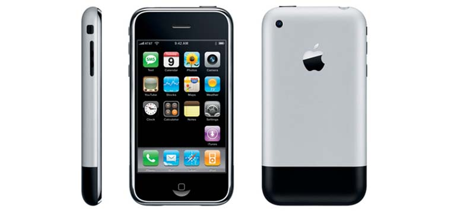

История iPhone
WELCOME TO APPLE
iPhone (1-е поколение)
Первый iPhone был выпущен в 2007 году. Это было революционное устройство, которое объединило телефон, плеер для музыки и Интернет-браузер в одном устройстве. iPhone имел крупный сенсорный экран и уникальный интерфейс, который позволял пользователю легко взаимодействовать с устройством.
iPhone 3G
iPhone 3G был выпущен в 2008 году. Это было первое iPhone с поддержкой 3G-сетей, что значительно улучшило скорость доступа в Интернет. Также iPhone 3G был доступен в более дешевой версии с 8 ГБ вместо 16 ГБ памяти.